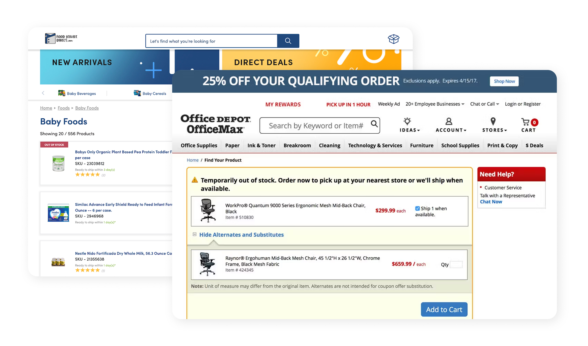
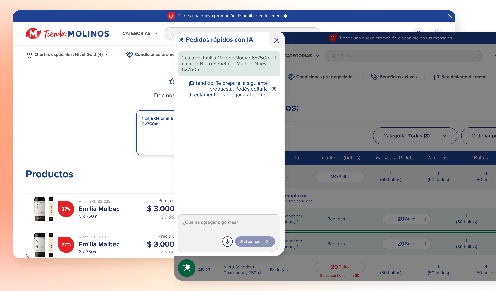

La IA se adopta cuando se apoya en lo conocido
Reutilizar el patrón de confirmación del pedido por archivo hizo que un flujo nuevo se sintiera familiar desde el primer uso, y abarató el desarrollo.
Propuesta para la tienda B2B de una empresa líder de alimentos en Argentina: que el comerciante escriba lo que necesita en lenguaje natural y un asesor inteligente lo convierta en un pedido optimizado, listo para confirmar en el checkout de siempre.A proposal for the B2B store of a leading food company in Argentina: the merchant writes what they need in natural language, and a smart assistant turns it into an optimized order, ready to confirm in the usual checkout.
El e-commerce B2B del cliente atiende a comercios que hacen pedidos grandes y recurrentes, y los cargan ítem por ítem. La propuesta: un flujo de alta de pedido desde un prompt, donde el usuario describe la necesidad de su negocio y un asesor con IA le devuelve una propuesta de compra optimizada, basada en sus ventas y las tendencias de la temporada. Se exploraron tres formas de integrarlo al sitio y se propuso una página dedicada, con resultados que reutilizan patrones que el usuario ya conoce y el checkout actual sin cambios.
The client's B2B e-commerce store serves merchants who place large, recurring orders and enter them item by item. The proposal: a prompt-based order flow, where the user describes their business need and an AI assistant returns an optimized purchase proposal, based on their sales history and seasonal trends. Three ways of integrating it into the site were explored, and a dedicated page was proposed, with results that reuse patterns the user already knows and no changes to the existing checkout.
User pain. El cliente B2B no navega por inspiración: repone. Armar un pedido voluminoso ítem por ítem (o preparar un archivo para importar) es una tarea lenta y repetitiva, que además exige saber de antemano qué conviene pedir.
User pain. The B2B customer doesn't browse for inspiration: they restock. Building a large order item by item (or preparing a file to import) is a slow, repetitive task that also requires knowing in advance what to order.
Business pain. Cada fricción en la carga del pedido es un pedido que se posterga o se achica. Y la empresa buscaba incorporar IA de forma que agregue valor real al comerciante, no como un gimmick.
Business pain. Every friction point in placing an order is an order that gets postponed or shrinks. And the company wanted to bring in AI in a way that adds real value for the merchant, not as a gimmick.
El comerciante sabe qué necesita su negocio: "lo de siempre para la semana, y algo para el finde largo". El sistema debería poder trabajar con eso.
The merchant knows what their business needs: "the usual for the week, plus something for the long weekend." The system should be able to work with that.
Se relevaron patrones de e-commerce B2B y food service para anclar la propuesta en convenciones probadas:
B2B e-commerce and food service patterns were surveyed to ground the proposal in proven conventions:

Antes de definir la propuesta se exploraron tres integraciones posibles, con sus trade-offs:
Before settling on the proposal, three possible integrations were explored, each with its trade-offs:

La página "Pedidos rápidos con IA" recibe al usuario con una sola pregunta, "¿Qué querés pedir?", y una explicación breve: describí la necesidad de tu negocio y el asesor inteligente te propone una compra optimizada, basada en tus ventas y las tendencias de la temporada. Estilo visual clásico, deliberadamente: la novedad está en la capacidad, no en la interfaz: el usuario tiene que encontrar familiaridad.
The "AI Quick Orders" page greets the user with a single question, "What do you need to order?", and a brief explanation: describe your business's need and the smart assistant proposes an optimized purchase, based on your sales and the season's trends. Deliberately classic visual style: the novelty is in the capability, not the interface — the user needs to find it familiar.
El pedido generado se presenta con el mismo estilo que la confirmación de pedido cuando se sube por archivo, un flujo que el usuario B2B ya conoce. Cada ítem muestra cantidades editables, precios y disponibilidad; los productos no disponibles se identifican junto con su posible sustitución, y se señalan los que no cumplen la cantidad mínima de compra. El usuario puede agregar todo al carrito de una vez, o eliminar, editar y agregar uno por uno, y tiene accesos a promos y productos sugeridos para completar el pedido.
The generated order is presented in the same style as the order confirmation when uploading a file, a flow the B2B user already knows. Each item shows editable quantities, prices and availability; unavailable products are flagged along with a possible substitute, and items that don't meet the minimum order quantity are marked. The user can add everything to the cart at once, or remove, edit and add items one by one, with access to promos and suggested products to round out the order.
Confirmado el pedido, el usuario cae en el carrito y checkout actuales, tal como están. Una decisión doble: mantiene la familiaridad del cierre de compra y acota el alcance de desarrollo al tramo nuevo del flujo.
Once the order is confirmed, the user lands in the current cart and checkout, exactly as they are. A twofold decision: it keeps the familiarity of the purchase close and limits the development scope to just the new stretch of the flow.
La propuesta fue presentada al cliente y está pendiente de implementación. Los próximos pasos definidos para una eventual puesta en marcha:
The proposal was presented to the client and is pending implementation. The next steps defined for an eventual rollout:
Reutilizar el patrón de confirmación del pedido por archivo hizo que un flujo nuevo se sintiera familiar desde el primer uso, y abarató el desarrollo.
Documentar por qué el modal y el buscador no eran el lugar correcto hizo más sólida la recomendación de la página dedicada frente al cliente.
El manejo de sustitutos de Office Depot resolvió el problema más espinoso del flujo: qué pasa cuando la IA propone algo que no hay.
Reusing the file-upload order confirmation pattern made a brand-new flow feel familiar from the first use, and cut down development cost.
Documenting why the modal and the search bar weren't the right place made the recommendation for a dedicated page stronger in front of the client.
Office Depot's substitution handling solved the flow's thorniest problem: what happens when the AI proposes something that isn't in stock.